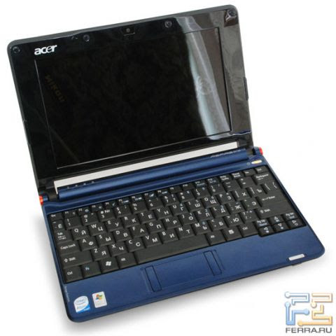
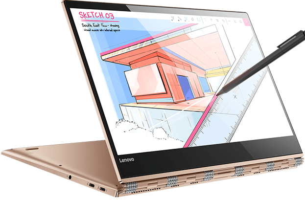
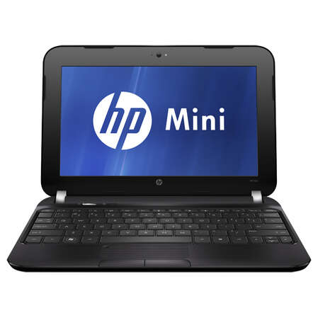

Нетбук: Особенности и характеристики
Определение
Нетбук — это компактный портативный компьютер, который предназначен для выполнения базовых задач, таких как работа с текстами, интернет-серфинг и просмотр мультимедиа. Он обычно имеет меньшую мощность по сравнению с традиционными ноутбуками.
История создания
Нетбуки появились в середине 2000-х годов как ответ на растущий спрос на доступные и портативные компьютеры. Первые модели, такие как Asus Eee PC, были выпущены в 2007 году. Эти устройства отличались низкой ценой, малым весом и длительным временем работы от батареи.
С течением времени производители начали выпускать различные модели нетбуков с разными характеристиками. Однако с увеличением производительности обычных ноутбуков интерес к нетбукам стал снижаться, что привело к их постепенному исчезновению с рынка.
Виды нетбуков
- 
Стандартные нетбуки: Обладают базовыми характеристиками для выполнения простых задач. Пример: Acer Aspire One. - 
Преобразуемые нетбуки: Могут использоваться как планшеты благодаря сенсорным экранам и поворотным механизмам. Пример: Lenovo Yoga. - 
Мини-нетбуки: Очень компактные устройства с ограниченными возможностями. Пример: HP Mini.
Технологии
Нетбуки обычно имеют:
- Процессоры: Низкопотребляющие процессоры, такие как Intel Atom или AMD E-Series.
- Оперативная память: Обычно 1-4 ГБ RAM, что достаточно для базовых задач.
- Хранение данных: SSD или HDD объемом до 500 ГБ.
- Дисплеи: Небольшие экраны (от 10 до 12 дюймов) с разрешением 1366x768 пикселей.
Применение
Нетбуки идеально подходят для пользователей, которым нужны базовые функции для работы в интернете, чтения электронных книг и написания документов. Они часто используются студентами и путешественниками благодаря своей легкости и компактности.
Виды Преимущества и недостатки